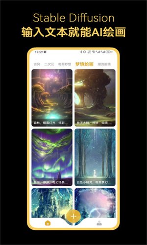

手机上用 Stable Diffusion 从零出图：一次跑通的实操教程
不用显卡、不用配环境，一台安卓手机从零到出一张像样的 AI 绘画。五步走完整个流程，顺手把最容易翻车的三个卡点也提前说清。
看完这篇，你拿起手机就能跑出一张像样的 AI 绘画——不是看教程云体验，是真的在手机上打开应用、提交描述、等图回传、存进相册。
准备工作（三分钟搞定）
你需要三样东西：
- 一台安卓手机（应用体积约 20 MB，不需要独立显卡也跑得动）
- 稳定的 Wi-Fi 或 4G/5G 信号
- 一个能用的网络环境就行——别的不用装、不用开 Python、不用配 CUDA，这款应用把 Stable Diffusion 云端跑起来了，去官网就能看到完整介绍
先去官方下载拿到安装包，装完打开。如果这步卡住了——应用打不开或者闪退——先别急着往下走，关掉后台省电策略再试一次。
第一步：打开应用，选一个风格分区
安装完成后第一次进应用，你会看到一排风格分区卡片。别犹豫，先挑一个你喜欢的：
- 古风插画、赛博朋克、胶片质感、日系动漫……每个分区对应一套预设的风格模板和推荐描述词
- 挑分区的时候别纠结"哪个最好"——第一次跑就是试手感，哪个顺眼选哪个就行
点进分区之后，你会看到一个类似画廊的作品流，展示别人用这个分区跑出来的成品。往上滑两下，看看别人写了什么描述词、效果怎么样，心里有个底。

第二步：写你的第一段描述词
点创作按钮进入创作页，现在到了最关键的一步——写描述词。
描述词决定了模型往哪个方向去"擦除噪声"。写得含糊，出来的图就含糊。给你一个实战起步框架，不用背公式：
主体 + 动作 + 场景 + 风格补充
举个例子，别直接写"一个女孩"，试试这样：
一个穿白色连衣裙的女孩，站在樱花树下，花瓣飘落，柔和的午后光线，胶片质感
写完之后，先点一下分区里自带的"推荐词"按钮——很多分区会给一段预设好的基础风格词，你可以把它追加到自己描述的末尾，效果会比纯手写更稳。
这里有个新手容易犯的错：描述词写太长。第一次跑别超过一行——几十个字足够，太多了模型反而抓不住重点。
第三步：设生成参数（保持默认就行）
创作页上还有几个参数设置，第一次跑全部保持默认：
- 采样器：默认的 DPM++ 之类的够用，不同采样器差别在精细度和速度上，第二次再调
- 迭代步数：默认 20~30 步，太少画面粗糙、太多耗时但收益递减
- CFG 引导系数：默认 7 左右——这个值控制模型"有多听话"。太低模型自己瞎跑、太高画面会崩
- 图片数量：第一次出 1 张。批量生成时间按张数累加，新手先单张试错
- 比例尺寸：默认 1:1 或者 3:4 竖向
别急着改这些——参数是后期微调的工具，第一次跑先把链路通了再说。
第四步：提交生成，耐心等
点生成按钮，任务会经历四步链路：提交 → 排队 → 生成 → 回传。
前面说过，这个应用是云端架构——手机上只有客户端（20 MB），真正的绘画计算发生在服务端 GPU 上。关于这条链路的完整技术细节可以去stablediffusion文档查，这里只讲实操层面的应对：
- 高峰期（晚上、周末）队列长，等待时间明显变长，别反复取消重交，每次重交都会重新排队
- 生成过程中保持应用在前台，锁屏太久或切后台过深，个别系统的省电策略会掐断后台连接
- 弱网下提交慢、回传慢，彻底断网等于完全不可用——切换到 Wi-Fi 再试
提交之后看进度条，从 0% 爬到 100% 就是去噪计算在逐步完成。跑完自动回传，点进详情页就能看到你的图了。
第五步：保存到相册
生成成功后进入详情页，点保存按钮图片就进手机相册了。到此链路完整跑通，恭喜你完成了第一张 AI 绘画。
接下来你可以在详情页点"制作同款"，用别人的描述词和参数重跑一张——这是最快学习好描述词的方式。觉得效果不够好？微调描述词、换个采样器、多加几个风格词都行。

三个最容易翻车的卡点
卡点一：等了半天还在排队
先自查三件事：是不是高峰期、是不是批量生成了多张、是不是弱网环境。错开晚上、把数量降到 1 张、切 Wi-Fi 这三件事做对了还卡，那就真的是服务端排队——换个时间段再试，别反复提交增加自己的排队时间。
卡点二：出来的图跟想的不一样
别上来就改一堆参数。先看描述词是不是写得太含糊——"一个人"不如"一个穿蓝色卫衣的年轻人"，"风景"不如"黄昏时的海边公路，远处有灯塔"。描述词是决定下限的，参数才是决定上限的。
还有一种情况是锚定错了风格分区——你在"古风插画"分区写了赛博朋克的描述词，模型就会在两种风格间拉扯，出来的图四不像。换个匹配的分区再跑。
卡点三：手指、脸画崩了
这是当前版本模型的通病，不是你的描述词问题。临时解法：出图后在应用内找到瑕疵修复选项跑一遍，或者加几个画质类描述词——"高清晰度、面部细节优化"——让模型多往细节上擦两下。
进阶可以玩什么
等五步法跑通三五次之后，你就可以解锁进阶了：图生图（给一张参考图让模型按它的构图重画）、局部重绘（只修改画面里的一小块）、高清放大（把低分辨率图放大到海报级）——这些进阶玩法在文档里有详细说明。
整体而言，这个应用把 Stable Diffusion 的"云端可用版"做得足够轻量：手机不用配置、不用显卡，五分钟上手能出图；但你如果想深入挖——描述词权重怎么调、采样器选哪个好、LoRA 风格包怎么用——完整参数说明要到文档里仔细翻。这款应用相关的开源资料在GitHub、Gitee、GitCode三个仓库都同步维护，国内访问哪个方便用哪个。